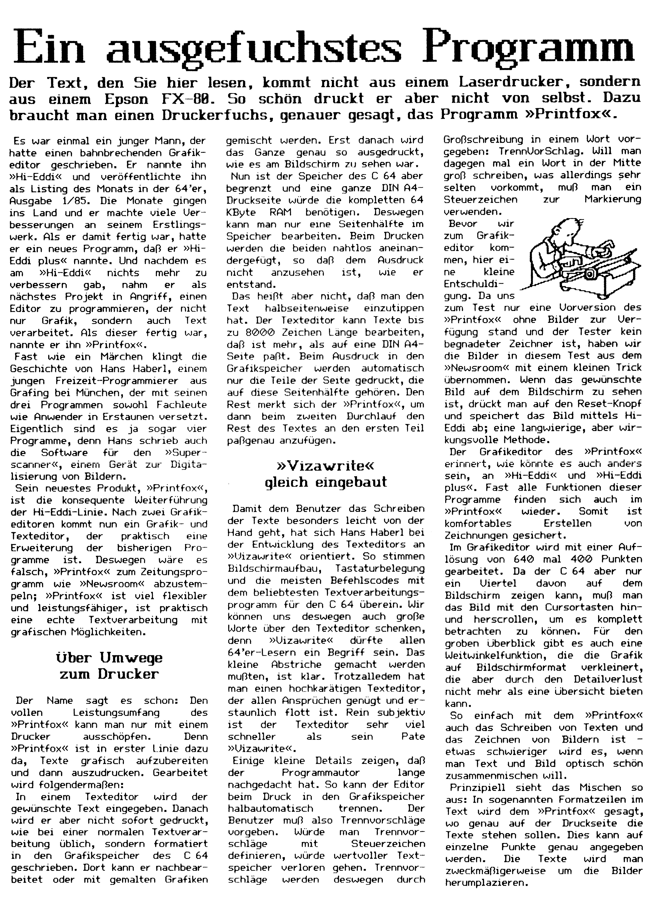
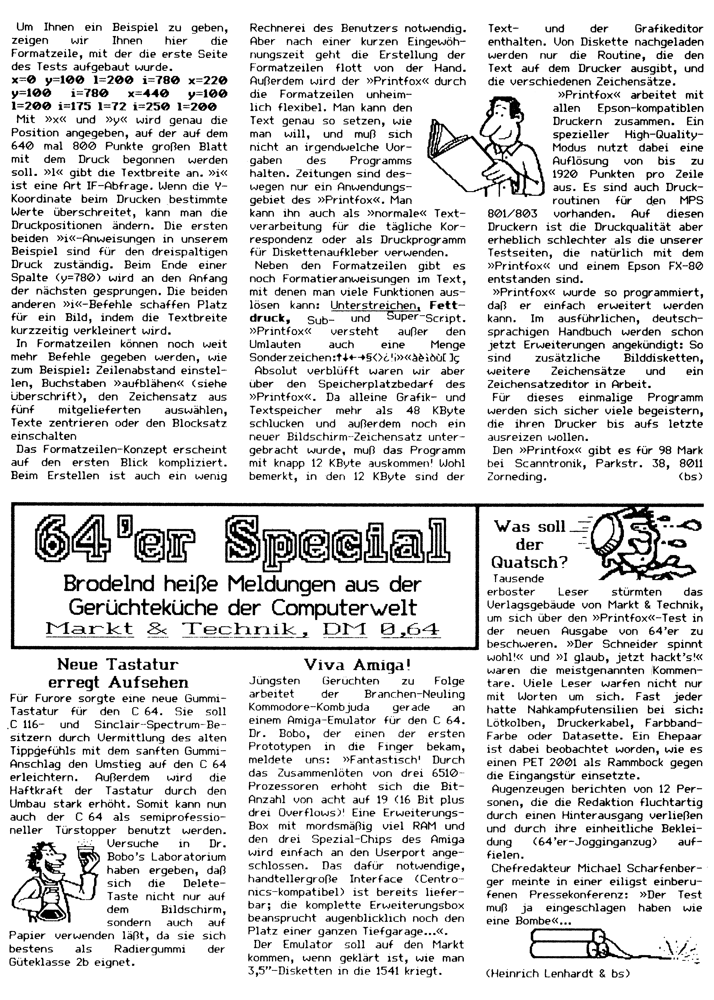

Ein ausgefuchstes Programm
Der Text, den Sie hier lesen, kommt nicht aus einem Laserdrucker, sondern aus einem Epson FX-88. So schön druckt er aber nicht von selbst. Dazu braucht man einen Druckerfuchs, genauer gesagt, das Programm »Printfox«.
Es war einmal ein junger Mann, der hatte einen bahnbrechenden Grafikeditor geschrieben. Er nannte ihn »Hi-Eddi« und veröffentlichte ihn als Listing des Monats in der 64’er, Ausgabe 1/85. Die Monate gingen ins Land und er machte viele Verbesserungen an seinem Erstlingswerk. Als er damit fertig war, hatte er ein neues Programm, daß er »Hi-Eddi plus« nannte. Und nachdem es am »Hi-Eddi« nichts mehr zu verbessern gab, nahm er als nächstes Projekt in Angriff, einen Editor zu programmieren, der nicht nur Grafik, sondern auch Text verarbeitet. Als dieser fertig war, nannte er ihn »Printfox«.
Fast wie ein Märchen klingt die Geschichte von Hans Haberl, einem jungen Freizeit-Programmierer aus Grafing bei München, der mit seinen drei Programmen sowohl Fachleute wie Anwender in Erstaunen versetzt. Eigentlich sind es ja sogar vier Programme, denn Hans schrieb auch die Software für den »Superscanner«, einem Gerät zur Digitalisierung von Bildern.
Sein neuestes Produkt, »Printfox«, ist die konsequente Weiterführung der Hi-Eddi-Linie. Nach zwei Grafikeditoren kommt nun ein Grafik- und Texteditor, der praktisch eine Erweiterung der bisherigen Programme ist. Deswegen wäre es falsch, »Printfox« zum Zeitungsprogramm wie »Newsroom« abzustempeln; »Printfox« ist viel flexibler und leistungsfähiger, ist praktisch eine echte Textverarbeitung mit grafischen Möglichkeiten.
Über Umwege zum Drucker
Der Name sagt es schon: Den vollen Leistungsumfang des »Printfox« kann man nur mit einem Drucker ausschöpfen. Denn »Printfox« ist in erster Linie dazu da, Texte grafisch aufzubereiten und dann auszudrucken. Gearbeitet wird folgendermaßen:
In einem Texteditor wird der gewünschte Text eingegeben. Danach wird er aber nicht sofort gedruckt, wie bei einer normalen Textverarbeitung üblich, sondern formatiert in den Grafikspeicher des C 64 geschrieben. Dort kann er nachbearbeitet oder mit gemalten Grafiken gemischt werden. Erst danach wird das Ganze genau so ausgedruckt, wie es am Bildschirm zu sehen war.
Nun ist der Speicher des C 64 aber begrenzt und eine ganze DIN A4-Druckseite würde die kompletten 64 KByte RAM benötigen. Deswegen kann man nur eine Seitenhälfte im Speicher bearbeiten. Beim Drucken werden die beiden nahtlos aneinandergefügt, so daß dem Ausdruck nicht anzusehen ist, wie er entstand.
Das heißt aber nicht, daß man den Text halbseitenweise einzutippen hat. Der Texteditor kann Texte bis zu 8000 Zeichen Länge bearbeiten, daß ist mehr, als auf eine DIN A4-Seite paßt. Beim Ausdruck in den Grafikspeicher werden automatisch nur die Teile der Seite gedruckt, die auf diese Seitenhälfte gehören. Den Rest merkt sich der »Printfox«, um dann beim zweiten Durchlauf den Rest des Textes an den ersten Teil paßgenau anzufügen.
»Vizawrite« gleich eingebaut
Damit dem Benutzer das Schreiben der Texte besonders leicht von der Hand geht, hat sich Hans Haberl bei der Entwicklung des Texteditors an »Vizawrite« orientiert. So stimmen Bildschirmaufbau, Tastaturbelegung und die meisten Befehlscodes mit dem beliebtesten Textverarbeitungsprogramm für den C 64 überein. Wir können uns deswegen auch große Worte über den Texteditor schenken, denn »Vizawrite« dürfte allen 64’er-Lesern ein Begriff sein. Das kleine Abstriche gemacht werden mußten, ist klar. Trotzalledem hat man einen hochkarätigen Texteditor, der allen Ansprüchen genügt und erstaunlich flott ist. Rein subjektiv ist der Texteditor sehr viel schneller als sein Pate »Vizawrite«.
Einige kleine Details zeigen, daß der Programmautor lange nachgedacht hat. So kann der Editor beim Druck in den Grafikspeicher halbautomatisch trennen. Der Benutzer muß also Trennvorschläge vorgeben. Würde man Trennvorschläge mit Steuerzeichen definieren, würde wertvoller Textspeicher verloren gehen. Trennvorschläge werden deswegen durch Großschreibung in einem Wort vorgegeben: Trennvorschlag. Will man dagegen mal ein Wort in der Mitte groß schreiben, was allerdings sehr selten vorkommt, muß man ein Steuerzeichen zur Markierung verwenden.
Bevor wir zum Grafikeditor kommen, hier eine kleine Entschuldigung. Da uns zum Test nur eine Vorversion des »Printfox« ohne Bilder zur Verfügung stand und der Tester kein begnadeter Zeichner ist, haben wir die Bilder in diesem Test aus dem »Newsroom« mit einem kleinen Trick übernommen. Wenn das gewünschte Bild auf dem Bildschirm zu sehen ist, drückt man auf den Reset-Knopf und speichert das Bild mittels Hi-Eddi ab; eine langwierige, aber wirkungsvolle Methode.
Der Grafikeditor des »Printfox« erinnert, wie könnte es auch anders sein, an »Hi-Eddi« und »Hi-Eddi plus«. Fast alle Funktionen dieser Programme finden sich auch im »Printfox« wieder. Somit ist komfortables Erstellen von Zeichnungen gesichert.
Im Grafikeditor wird mit einer Auflösung von 640 mal 400 Punkten gearbeitet. Da der C 64 aber nur ein Viertel davon auf dem Bildschirm zeigen kann, muß man das Bild mit den Cursortasten hin- und herscrollen, um es komplett betrachten zu können. Für den groben Überblick gibt es auch eine Weitwinkelfunktion, die die Grafik auf Bildschirmformat verkleinert, die aber durch den Detailverlust nicht mehr als eine Übersicht bieten kann.
So einfach mit dem »Printfox« auch das Schreiben von Texten und das Zeichnen von Bildern ist -etwas schwieriger wird es, wenn man Text und Bild optisch schön zusammenmischen will.
Prinzipiell sieht das Mischen so aus: In sogenannten Formatzeilen im Text wird dem »Printfox« gesagt, wo genau auf der Druckseite die Texte stehen sollen. Dies kann auf einzelne Punkte genau angegeben werden. Die Texte wird man zweckmäßigerweise um die Bilder herumplazieren.
Um Ihnen ein Beispiel zu geben, zeigen wir Ihnen hier die Formatzeile, mit der die erste Seite des Tests aufgebaut wurde.
x=0 y=100 l=200 i=780 x=220 y=100 i=780 x=440 y=100 l=200 i=175 l=72 i=250 l=200
Mit »x« und »y« wird genau die Position angegeben, auf der auf dem 640 mal 800 Punkte großen Blatt mit dem Druck begonnen werden soll. »l« gibt die Textbreite an. »i« ist eine Art IF-Abfrage. Wenn die y-Koordinate beim Drucken bestimmte Werte überschreitet, kann man die Druckpositionen ändern. Die ersten beiden »i«-Anweisungen in unserem Beispiel sind für den dreispaltigen Druck zuständig. Beim Ende einer Spalte (y=780) wird an den Anfang der nächsten gesprungen. Die beiden anderen »i«-Befehle schaffen Platz für ein Bild, indem die Textbreite kurzzeitig verkleinert wird.
In Formatzeilen können noch weit mehr Befehle gegeben werden, wie zum Beispiel: Zeilenabstand einstellen, Buchstaben »aufblähen« (siehe Überschrift), den Zeichensatz aus fünf mitgelieferten auswählen, Texte zentrieren oder den Blocksatz einschalten
Das Formatzeilen-Konzept erscheint auf den ersten Blick kompliziert. Beim Erstellen ist auch ein wenig Rechnerei des Benutzers notwendig. Aber nach einer kurzen Eingewöhnungszeit geht die Erstellung der Formatzeilen flott von der Hand. Außerdem wird der »Printfox« durch die Formatzeilen unheimlich flexibel. Man kann den Text genau so setzen, wie man will, und muß sich nicht an irgendwelche Vorgaben des Programms halten. Zeitungen sind des- \ wegen nur ein Anwendungs- x gebiet des »Printfox«. Man kann ihn auch als »normale« Textverarbeitung für die tägliche Korrespondenz oder als Druckprogramm für Diskettenaufkleber verwenden.
Neben den Formatzeilen gibt es noch Formatieranweisungen im Text, mit denen man viele Funktionen auslösen kann: Unterstreichen, Fettdruck , Sub- und Super-Script. »Printfox« versteht außer den Umlauten auch eine Menge Sonderzeichen:↑↓←→§\<>¿!¡»«àèìòù[]ç
Absolut verblüfft waren wir aber über den Speicherplatzbedarf des »Printfox«. Da alleine Grafik- und Textspeicher mehr als 48 KByte schlucken und außerdem noch ein neuer Bildschirm-Zeichensatz untergebracht wurde, muß das Programm mit knapp 12 KByte auskommen? Wohl bemerkt, in den 12 KByte sind der Text- und der Grafikeditor enthalten. Von Diskette nachgeladen werden nur die Routine, die den Text auf dem Drucker ausgibt, und die verschiedenen Zeichensätze.
»Printfox« arbeitet mit allen Epson-kompatiblen Druckern zusammen. Ein spezieller High-Quality-Modus nutzt dabei eine Auflösung von bis zu 1920 Punkten pro Zeile aus. Es sind auch Druckroutinen für den MPS 801/803 vorhanden. Auf diesen Druckern ist die Druckqualität aber erheblich schlechter als die unserer Testseiten, die natürlich mit dem »Printfox« und einem Epson FX-80 entstanden sind.
»Printfox« wurde so programmiert, daß er einfach erweitert werden kann. Im ausführlichen, deutschsprachigen Handbuch werden schon jetzt Erweiterungen angekündigt: So sind zusätzliche Bilddisketten, weitere Zeichensätze und ein Zeichensatzeditor in Arbeit.
Für dieses einmalige Programm werden sich sicher viele begeistern, die ihren Drucker bis aufs letzte ausreizen wollen.
Den »Printfox« gibt es für 98 Mark bei Scanntronik, Parkstr. 38, 8011 Zorneding.
(bs)
